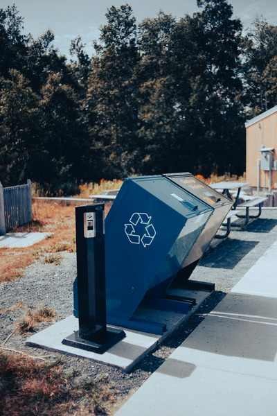

VRUSA Projects
Field data collection and analysis supporting pedestrian and cyclist safety improvements. Attended town meetings, and built detailed interesection diagrams in Excel to show traffic patterns.
Field data collection and analysis supporting pedestrian and cyclist safety improvements. Attended town meetings, and built detailed interesection diagrams in Excel to show traffic patterns.
Operational and financial evaluation of the Sebago transfer station as a summer intern. Created a final report with extensive statistical data and recommendations, including installation of a vehicle scale to resolve billing issues. This report was presented to the selectboard and town residents.

Econometrics final project using regression modeling in R to determine whether low sleep quality leads to low job satisfaction. Found a modest correlation, with other factors being more influential.